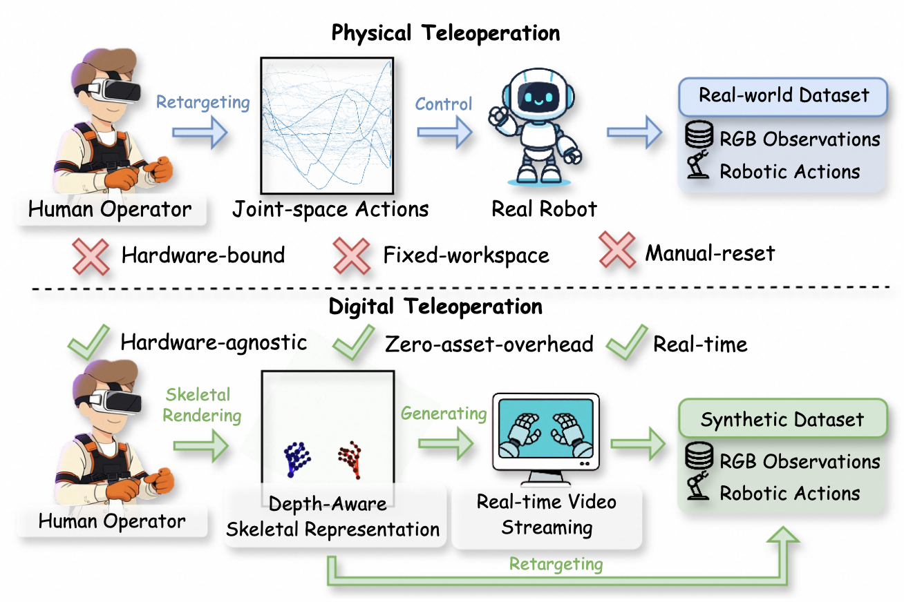
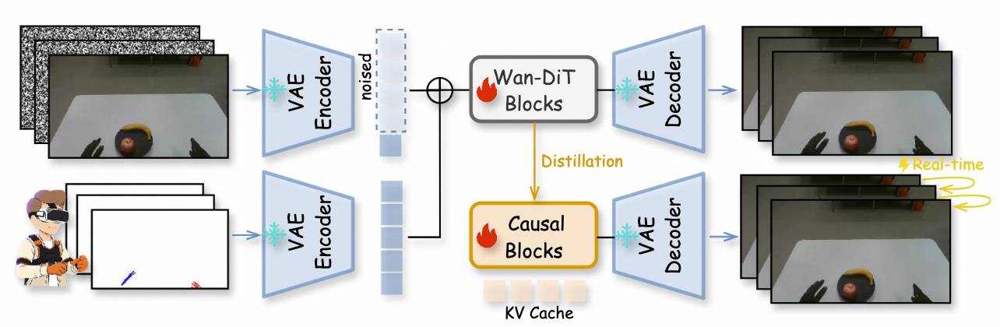

Abstract
We introduce RynnWorld-Teleop, a robot-centric generative world model that instantiates the paradigm of digital teleoperation—decoupling robot data collection from physical hardware constraints. By transforming an operator’s real-time hand-pose stream into high-fidelity egocentric robotic videos from a single reference image, RynnWorld-Teleop enables the scaling of expert trajectories in a purely virtual environment. Our framework integrates depth-aware skeletal conditioning with a progressive human-to-robot training curriculum, allowing it to inherit rich manipulation priors from large-scale human datasets. To support interactive use, we distill the model into a causal, autoregressive student capable of real-time streaming. Policies trained exclusively on RynnWorld-Teleop synthetic data achieve effective zero-shot Sim2Real transfer, demonstrating its power as a high-fidelity data engine for scaling dexterous robotic learning.
🌟 Key Highlights
-
Depth-Aware Action Representation:
Resolves 3D spatial ambiguity by rendering 21-joint hand skeletons with depth-modulated color and diameter, providing explicit geometric grounding within a 2D latent conditioning signal. -
Progressive Cross-Domain Training:
Employs a two-stage curriculum that first absorbs manipulation priors from massive egocentric human videos and then adapts to specific robotic embodiments via paired teleoperation data. -
Streaming Autoregressive Distillation:
Distills a bidirectional teacher into a causal student model, achieving 39 FPS interactive generation to keep the human operator in a responsive, closed-loop control.
Overview


Action-Conditioned Video Synthesis
Action-Conditioned Robot-Specific Video Synthesis
Action-Conditioned Video Synthesis (Out of Domain)
Zero-Shot Sim2Real Policy Transfer
BibTeX
@article{RynnWorld-Teleop,
title = {RynnWorld-Teleop: An Action-Conditioned World Model for Digital Teleoperation},
author = {Haoyu Zhao and Xingyue Zhao and Hangyu Li and Biao Gong and Kehan Li and Siteng Huang and Xin Li and Deli Zhao and Zhongyu Li},
year = {2026}
}